2. Searching for Design Concepts
2.2. Design Techniques
Designing is rightly considered to be a process because to achieve optimum problem solutions, several
factors and sub-tasks must be undertaken in an orderly fashion. A typical diagram depicting the design
stages is shown in Figure 2.1, followed by brief descriptions of the constituent elements.
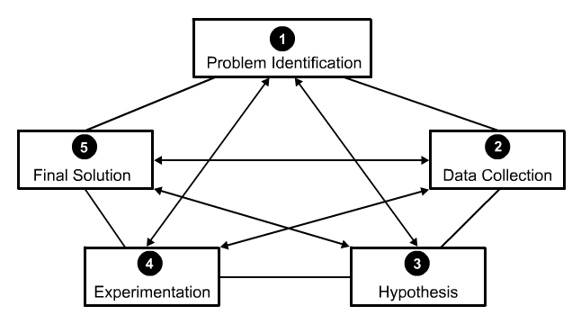
Problem Identification (Phase 1)
A design task may emerge as a perceived need for a better existing product. The task may totally be
innovative and with greater visual requirements. As a new product is conceived or an existing one
improved, the primary need is to present a commodity that will meet a need or render a service in a
manner superior to that of any former or similar product. This can result only from a judicious problem
definition.
Data Collection (Phase 2)
This is the research phase of product design. Once the problem has been defined and given focus,
pertinent data must be gathered, information retrieved, benchmarks examined, market assessments made,
and cost analyses undertaken. Data collection is equally important for both the negative and the
positive inferences.
Hypothesis (Phase 3)
This activity is the concept-development stage, where intuition and technical expertise merge together to
produce a range of possible solutions for a problem. Hypothesis is the heart of the design process, the
stage at which potential configurations emerge and are evaluated.
Experimentation (Phase 4)
At this stage, the possible solutions are refined and prototypes are built, which can be evaluated,
modified and compared to earlier analyzed data. Some critical questions are essential at this stage,
like: “Is the product strong enough?”, “Does it work?”, “Is it visually correct?”, “Is it safe?”, “Is it
vandal proof?”, “Is it marketable?”
Experimentation stage has the opportunity to examine the various problem solutions critically and to
detect and correct errors before the article is put into production.
Final Solution (Phase 5)
The result of the previous four phases of design process is the ultimate problem solution. At this stage,
considerable attention must be paid to these refinements needed to satisfy special methods of
manufacture in order to simplify the product so that it can easily be assembled, to modify it so that
standard components may be used or to improve its appearance among others. Obviously this is the utmost
opportunity for all members of a design team comprising industrial engineer, design engineer, production
engineer, safety engineer, product maintenance specialist, ergonomist and others to complement each
other.
2.5. Design by Evolution
While going through the history of developments, one finds that most of tools, equipment, implements,
etc. took a considerable time to acquire their present form. Things got changed gradually with the
passage of time and each change was made to overcome some difficulty faced by the user or to add some
new features to increase its usefulness. The main reason of this slow evolutionary process of design was
the absence of proper information and design data records. In spite of its slowness, this was the only
way early designers could cope up with the requirements. Bicycles, calculators, computing devices, steam
locomotives, aero-planes, etc. all passed through a process of evolution in which designers tried a
series of concept one after another. Even today, this process is being used to some extent. The
histories of modern products have larger step changes with smaller time intervals in which evolutionary
changes take place.
In modern design situations, the evolutionary methods are not adequate because of the following reasons.
- The earlier traditional designers were concerned with only one component but today there is more and
more interdependence among different components and products. Therefore, the designs are handled at
the system level and not at the product level. The principles of "concurrent engineering" are being
used in today’s scenario.
- The slow process of evolution would result in wastage because of larger scale of production.
Previously, production was on a small scale and thus the penalty of a wrong choice in design system
was only limited.
- Because of the flexibility requirements in design and their suitability for a wide variety of
situations, the responsibility of the designer has changed considerably, as compared to the past,
and this situation demands newer methods of design.
- The rapid advancement in both product and process technologies makes situations quite different and,
as such, evolutionary methods of design may not fulfill the requirements.
- Because of competitive requirements, it is essential to anticipate and keep pace with future
requirements and changes. A particular requirement cannot be met by a slow evolution of the existing
products.
2.8. Design through Morphological Analysis
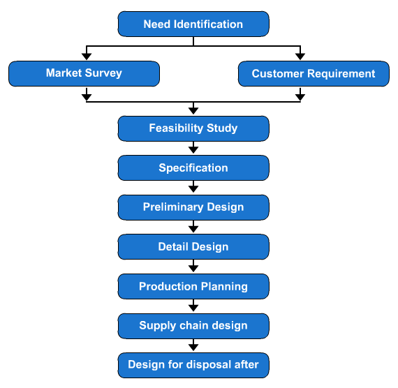
Morphology is a systematic search for alternatives by looking at the possible combinations of diverse and
previously unrelated parameters. Morphological analysis is a method of searching for ideas. It widens
the area of search for optimum or better solutions to a design problem.
As it is obvious that morphological study generates many solutions, it is essential to reduce these
solutions to a few feasible solutions for a detailed analysis and subsequent evaluations. Some solutions
will be ignored because of incompatibility among some ways to meet functions. Moreover, solutions and
fitting initial specifications are also not wanted. Finally, the remaining solutions should be compared
on cost estimate and the time-cost requirement for research and development.
First stage of morphological study is the explorative phase, followed by transformation phase, and
convergence phase. Next stage of the study is that of evaluation where reliability, quality and
performance must be studied. The outcome of this stage is the complete design, that is, complete in
every respect.
Step-by-Step Study of Morphology of Design
A project goes through a series of major phases. Generally, a new phase is not begun until the preceding
one is completed. The morphology of design refers to the study of the chronological structure of the
design project, the details of which are given hereunder.
Feasibility Study (Phase 1)
A design project begins with the feasibility study. The purpose of this phase is to achieve a set of
useful solutions to the design problem. Sometimes, a design group is assigned to a project for which a
design concept has already been fixed. In this case, the first step in the study process is to
demonstrate whether there is an original need, which was presumed to be valid, does indeed have current
existence, or strong evidence of latest existence. The next step is to explore the design problem and to
identify its elements, such as, parameters, constraints and major design criteria. In the next step, an
effort is made to conceive several plausible solutions.
Preliminary Design (Phase 2)
This phase starts with the set of useful solutions which were developed in the feasibility study. The
purpose of this phase is to establish which of the preferred alternatives is the best design concept.
Each alternative is examined to ascertain its superiority or inferiority to others. The surviving
solution is closely examined. Synthesis study is initiated to establish the fineness of range within
which major design parameters of the system must be controlled. Further studies investigate the
tolerances of the components and critical materials. Next projective type studies are undertaken gauging
how the solution will cope up with time.
Detailed Design(Phase 3)
Detailed design and engineering follows a process which entails conceptual design, embodiment design and
detail design and, when performed professionally, eventually results in a well-designed solution.
Conceptual design is Phase One of detailed design and engineering in which drawings are the main output.
The drawings produced are often quite simple ideas with little detail, but the aim of the conceptual
phase is to commit ideas to paper.
The Embodiment phase of the detailed design and engineering process starts with the concept and develops
it into a workable system that can be further developed. During this phase, engineers will typically
follow a framework of clarity, simplicity and safety in achieving the design goal.
Detailed design is the phase where the design is refined, and plans, specifications and estimates are
created. Detailed design will include outputs such as 2D and 3D models, P & ID’s, cost build up
estimates, procurement plans etc. This phase is where the full cost of the project is identified.
Planning for Production Process (Phase 4)
The previous described three phases are the domain of the design engineers, whereas this phase is
generally shared by other segments of the management. A new battery of skills (those of tool design and
production engineering) come into play in this domain. The decision of production involves enormous
economic commitment. The production planning phase comprises several steps including the followings.
- Detailed planning of the manufacturing process, as required for every part, sub-assembly and final
assembly.
- Design of tools and fixtures.
- Planning, specifying or designing new production and plant facilities.
- Planning quality control system.
- Planning for production and personal job specifications, standard times, labour costs, etc.
- Planning for production control, work schedules and inventory controls are evolved. Standard costs
for labour, materials and services are established and integrated with the accounting system.
- Planning information flow system
- Financial planning, that is, the source of financing must carefully be established, the means and
rate of recovery of capital is also determined.
Planning for Distribution (Phase 5)
The purpose of this phase is to plan an effective and flexible system for distribution of finished goods.
Followings are the major steps of this phase.
- Designing the packing of the product.
- Planning for supply chain which includes logistic, warehousing and reverse logistic. The planning is
being made considering all economic and environmental factors
- Planning the promotional activity.
- Designing the product for effective distribution in the prevailing conditions.
Planning for Consumption (Phase 6)
Consumption is the third process in the production-consumption cycle. Its influence on design is
profound, for it pervades all phases. The purpose of this phase is to incorporate, in the design,
adequate service features and to provide a rational basis for product improvement and design. The
various steps involved in this phase are given hereunder.
- Design for maintenance.
- Design for reliability.
- Design for safety.
- Design for convenience in use (human factor).
- Design for aesthetic features.
- Design for operational economy.
- Design for adequate duration of service.
- Design for product improvement on the basis of service data and its use for next generation designs
of different but related products.
Planning for Obsolescence of Product (Phase 7)
The fourth process in the production-consumption cycle is the disposal of the obsolete product. For large
and semi-permanent installations, mere removal may pose difficult engineering problems, as for sample
demolition of a tall building closely confined by buildings on either side. Sometimes, it is required
that an old structure/system should be replaced by a new one with minimum disruption of normal
operations. The necessity of replacement of commercial/industrial device or goods is felt when it gets
too worn-out to render adequate services.
To the designer, the question whether to design for physical deterioration or for technical obsolescence
is of fundamental importance.
The purpose of this phase is to take account of the problems associated with obsolescence and disposal of
the product. The various steps involved in this process are as follows.
- Designing to reduce the rate of obsolescence by considering the anticipated effects of technical
developments.
- Designing physical life to match anticipated service life.
- Designing for several levels of use so that, when service life at a higher level of use is
terminated, the product will be adaptable to further use at a less demanding level.
- Designing the product so that reusable material and long-lived components can be recovered.
- Designing the product for its disposal and recyclability, i.e. cradle to grave design or cradle to
cradle design.
- Examining and testing of service-terminated products in the laboratory to obtain useful design
information.
To summarize the morphology of design, the first three phases are the principal concern of the design
group and the latter four (which constitute a secondary part stemming from production-consumption cycle)
have so great an impact on the design that these must be considered in detail in the total design
effort.
2.9. Brainstorming
It is defined as a method to practice a conference technique by which a group attempts to find out a
workable solution for a specific problem by accumulating all ideas spontaneously contributed by a group
of experts. It is used to take advantage of the combined ideas of a group of experts of the same field
or different fields but working for the same problem. No attempt is made to evaluate the ideas generated
during the session. It is a process of stimulating ideas through which more effective solution may
arrive at rather than trying to generate alternative solutions by individuals. This helps to unlock the
creative power of the group. The following are guidelines which must be maintained to get the maximum
benefit out of this process.
- Each member in rotation is asked for ideas. This continues until all ideas are exhausted.
- Only one idea per turn is offered by the individual.
- A member having no idea simply says 'pass'.
- No idea should be treated as stupid. Criticism would inhibit free flow of ideas.
- Rigid formality should be avoided. Good natured humour enthuses members to open up freely.
- The leader should help in summarizing an idea and guide members in clarity of expression.
- No evaluation of ideas is done during brainstorming.
- A black board, a large sheet of paper or transparent sheets for use on an overhead projector could
be used for listing out ideas.
- After all ideas are exhausted and brainstorming is over, each one is taken up for detailed
discussion and a consensus by voting is taken, if necessary to select those ideas which are vital,
important and valid for a project.
- The brainstorming technique can effectively be used to identify problems affecting the work-area
(factors which can prevent potential problems, causes responsible for problems and, solutions to
problems, etc.).
- The members might find it useful to ask questions to themselves based on the five W’s and one H
(5WH) principal, that is, What, Why, When, Where, Who and How.
- If an outsider happens to drop in during a brainstorming session, s/he may be asked to join in the
process.
- If an Agenda is distributed to members prior to the meeting it would enable them to think about the
topic scheduled for brainstorming in advance and thus be ready with many ideas when the meeting
starts.
- It would be useful to keep records of brainstorming for future references.
3. Manufacturing Processes
Casting Process
Casting is one of the most economical methods of producing components. It is a process of forming
metallic products by melting the metal, pouring it into the cavity known as mould and allowing it to
solidify. In this way, the molten metal takes the shape of the mould cavity. Mould is made with the help
of a pattern, which may be made of wood, metal or non-metal like polystyrene, wax etc. The internal
hollow shape, if any, is made with the help of a sand core of desired shape, which is made with the help
of a core box. The moulds are provided with core prints where the core is properly held so that the core
may not be displaced or sifted during the pouring of molten metal. Moulds can be made of metal or
non-metal, but they are generally made of sands. The product so produced is cleaned and machined to the
desired dimensions.
Terminology Used in Casting
Before going to the details of the casting process, defining a number of casting terminologies are
important and those are given hereunder. Figure 3.1 shows various components used in a mould structure.
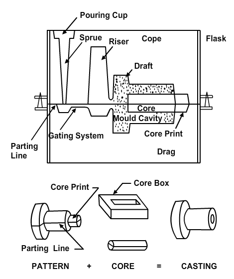
Drag is the lower moulding box.
Cope is the upper moulding box.
Check is the intermediate moulding box.
Pattern is a replica of the desired final product with some modifications. The mould cavity is
made with the help of the pattern.
Parting Line is the dividing line between the two or more moulding boxes. In split pattern, it is
also the dividing line between the two halves of the pattern.
Facing Sand is high quality sand having higher sintering point and low thermal expansion used on
the face of the mould. It helps to give better surface finish to the castings. Sometimes plumbago
powder, Ceylon lead and graphite are used as facing sands to prevent the metal form burning the moulding
sand.
Parting Sand is used to prevent the joint between the halves of a mould from adhering to one
another when the two parts of a moulding box are separated. It also prevents the sand from adhering to
the pattern.
Backing Sand is used to fill the flasks to cover the pattern.
Core is used for making hollow cavity in casting.
Core Print is provided in the pattern, core and mould to locate and support the core within the
mould.
Mould CavityThe mould material and the core then combine to form the mould cavity. It is the
hollow portion of mould in which the molten metal is poured to get the casting.
Permeability is also called porosity. It refers to the ability of moulding sand to provide the
passage of gaseous materials, water and steam vapour.
Pouring BasinA small funnel-shaped cavity at the top of the mould into which the molten metal is
poured.
RunnerThe passage in the parting surface through which molten metal flow is regulated before the
metal reaches the mould cavity.
GateThe actual entry point through which molten metal enters the mould cavity.
Chaplet is used to support the core inside the mould cavity to take care of its weight and
overcome the metallostatic pressures.
Chill are metallic objects, which are placed in the mould to increase the cooling rate of castings
so as to provide uniform or desired cooling rate.
Riser acts as a reservoir of molten metal provided in the mould so that the hot metal can flow
back into the mould cavity when there is shrinkage due to solidification.
Tools and Equipment
In this section, various tools generally used in the casting process are described. Figure 3.2 depicts
some of the important tools used for this purpose.
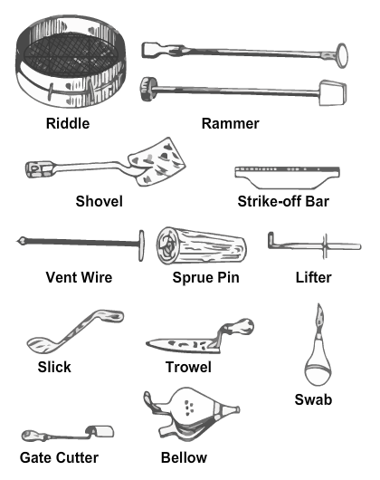
Riddle is a wooden frame with a wire mesh bottom. It is used for removing foreign materials, such
as, nails, splinters of wood, etc. from the moulding sand.
Rammer is a wooden tool used for packing the sand into the mould.
Shovel is used for mixing and tempering moulding sand and for moving sand from the pile to the
flask.
Strike-off Bar is a metal bar used to remove the surplus sand from the mould after the ramming has
been completed.
Vent Wire is a wire rod used for making opening called "vents" in the mould to allow the escape of
gas and steam from the mould during the pouring operation.
Sprue Pin is either wooden or metallic pin to make an opening in the mould through which the metal
is poured.
Lifter are used for patching deep sections of a mould and removing loose sand from pockets of the
mould.
Slick are available in many types, which vary in shape and are used for repairing and finishing
moulds.
Trowel are available in many types and are used for making joints and finishing flat surface of
the mould.
Swab is made of hemp and used for applying water to the mould around the edge of the pattern
before removing the same from the mould.
Gate Cutter is a piece of sheet metal, which is used to cut opening (gate) that connects the sprue
with the mould cavity.
Bellow are used to blow loose sand out of the mould and are used more frequently.
Moulding Board is a smooth board on which the pattern and the flask are placed during the
moulding.
Gagger are used for reinforcement of the sand in the cope.
Ladle are used to receive molten metal from the melting furnace and is used to pour the same into
the mould.
Crucible are used as metal melting pots.
Types of Foundries
Foundries are of many types according to the nature of work they undertake and the framework of their
organizations.
Foundries may be categorised as follows.
- Captive foundry
- Jobbing foundry
- Production foundry
- Semi-production foundry
Captive Foundry
The captive foundry is an integral part of some manufacturing organizations. It makes castings for the
same only and all the castings made in a captive foundry are consumed mainly in the products being
manufactured by that organization.
Jobbing Foundry
Jobbing foundry produces normally small number of castings of a given type for different customers. Such
foundries sometimes also have facilities for mass production.
Production Foundry
The producing foundry is highly mechanised and can produce castings economically on mass production.
Semi-production Foundry
The semi-production foundry is a combination of jobbing foundry and production foundry. In other words, a
semi-production foundry accepts both the production and the job work.
Steps of Casting Process
Major steps of casting process are as follows.
- Pattern making,
- Mould and Core making,
- Melting and Pouring,
- Cleaning of casting, and
- Inspection and quality control.
Pattern Making
This is the first step in making a casting. Pattern is a model of a desired casting component. It can be
made from any of the following
- wood,
- metal,
- plastic,
- plaster of paris, and
- wax
Wood
Wood is the most popular material for pattern making because of a number of characteristics, namely,
- cheapness,
- availability,
- ease of fabrication in various forms,
- light in weight,
- easy to give good surface finish.
Wood is used as a pattern material when the lot size to be produced is less.
Metal
Metallic patterns are preferred when the numbers of castings to be produced are very large in number.
These patterns are not affected by the moisture of the moulding sand and they are highly wear resistant.
The main disadvantages of metallic pattern are:
- higher cost,
- higher weight, and
- tendency of rusting
Plastics
Plastics are gaining favour day-by-day as pattern materials owing to the characteristics, namely,
lightness in weight, high strength, high resistance to wear and corrosion, low solid shrinkage, fine
surface finish, low cost, etc. The plastic used for pattern making is generally thermosetting resins.
Phenolic resin plastic and foam plastic are widely used for the above purpose.
Plaster of Paris
Plaster of paris is generally used for producing small patterns and core boxes containing intricate
shapes which require closer dimensional control. Pattern made by plaster of paris can easily be worked.
Its expansion can easily be controlled, and it has very high compression strength.
Wax
Wax is used only in investment casting. For this, a die or metal mould is made in two halves into which
the heated wax is poured. The die is kept cool by circulating water around it. As the wax sets on
cooling, the die parts are separated, and the wax pattern is taken out.
For selecting a particular material for pattern making, the following factors must be taken into
consideration.
- Number of castings to be produced
- Mould material used
- Type of moulding process
- Degree of accuracy and surface finish required
- Minimum thickness required.
Investment Casting
It is actually a very old process. It involves the following steps.
- Make a master pattern
- Use the master pattern to produce a master die
- Produce the wax patterns
- Assemble the wax patterns to a common wax sprue
- Coat the cluster with a thin layer of investment material
- Produce the final investment around the coated cluster
- Vibrate the flask to remove entrapped air and to settle the investment material around the cluster
- Allow the investment to harden
- Melt or dissolve the wax pattern to permit it to run out of the mould
- Preheat the mould in preparation for pouring
- Pour the molten metal
- Remove the casting from the mould.
This process is applicable to a wide range of alloys. However, it is mainly used in the production of
steel castings. Through holes can be cast provided that the diameter exceeds 9.5 mm. The surface finish
ranges from 1.6 ∝m to 3.3 ∝m and dimensional tolerances about ±0.25 mm per 1.5 mm to 100 mm. Typical
castings like valves used for petrochemical industry, drive sprockets, truck suspension supports,
castings for food processing industry and castings for military applications are produced by this
process.
Forming Process
Metal Forming
During the basic considerations in metal forming processes, it appears that it depends mainly on the
three flow systems. By combining these elements, process morphology is obtained from which all metal
forming processes can be deduced.
The fundamental elements in this morphological model are:
- metal flow,
- energy flow, and
- information flow
The details of which are given below. Figure 4.1 shows the morphology of the metal forming process.
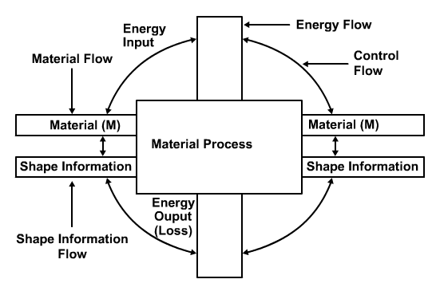
Metal Flow
Metal Flow depends on factors, namely, state of material, basic process, and the type of flow (process
type).
Energy Flow
The energy flow depends upon a number of factors, including tool/die, energy supply, transfer medium,
equipment, energy characteristics, and the type of energy.
Information Flow
The information flow is the encapsulation of the features, namely, surface creation (principles), pattern
of movement for material and tool/die.
Each of these carries different values. By choosing a value from each column, the fundamental process is
obtained.
Hot Working
Metal working above the re-crystallization temperature is termed as hot working process. The
re-crystallization temperature is defined as "The approximate minimum temperature at which complete
re-crystallization of a cold worked metal occurs within a specified system".
Generally, the re-crystallization temperature lies in between one third and half the melting point of
most of the metals. It also depends on the amount of cold work a material is generally passed. Lower the
cold work, higher will be the re-crystallization temperature. One should keep in mind that hot working
must be completed at the re-crystallization temperature. Otherwise, extra heat left over after working
will help in grain growth and result in poor mechanical property. Figure 4.2 shows the grain reformation
during the hot rolling operation.
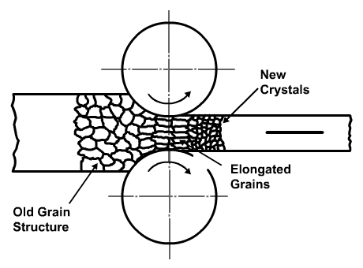
Advantages of Hot Rolling
- In this process, no strain hardening takes place.
- At a high temperature, the material would have higher amount of ductility and, therefore, there is
no limit on the amount of hot working that can be done on a material. Even brittle materials can be
hot worked.
- Hot working requires much less force to achieve the necessary deformation.
- It is possible to continuously reform the grain in metal working and, if the temperature and rate of
working is properly controlled, a very favourable grain size and mechanical properties could be
achieved.
Disadvantages of Hot Rolling
- Some materials cannot be hot worked as they become brittle at higher temperature.
- Surface finish achieved by this process is poor due to formation of scaling.
- Dimensional accuracy in this process is difficult to achieve because it is difficult to control the
temperature of the work-piece.
- Handling is difficult in this process.
Cold Working
The working of metals at temperatures below their re-crystallization temperature is defined as cold
working. Most of the cold working processes are, however, performed at room temperature. When the
material is cold worked, the resulting change in material shape brings about lot of changes in the grain
structure. More pressure is needed for cold working than for hot working. Due to this reason, a residual
stress is developed during cold working. This effect is minimized or decreased by heating the metal into
the re-crystallization range and finally the metal is brought to its original condition. This process is
generally used for finishing operation. This process improves the tensile strength, yield strength and
hardness of steel but it decreases the ductility.
Advantages of Cold Rolling
- This process increases the strength and hardness of the material due to the strain hardening.
- This process is done in cold state so there is no chance of oxide formation on the work-piece and as
a result good surface finish obtained.
- Better dimensional accuracy is obtained.
- This process is easy and economical for smaller component sizes.
Disadvantages of Cold Rolling
- In this process, the deformation that can be given to the work-piece is limited by the capacity of
the presses or hammers.
- In this process, the material gets strain hardened and due to this reason the amount of deformation
is limited. Further deformation can be given after annealing.
- Brittle materials cannot be cold worked.
Forging
A generalistic view of the Forging with sketches outlining the various intrinsic parameters of it is
given below.
Process Description
Drop forging is a metal shaping process in which a heated work-piece is forced to conform to the shape of
a die cavity by rapidly closing a punch and die. The closing of die cavities may either be singular or
repeated; typically, however, one blow is given in each die cavity. The drop hammer is powered by either
air, hydraulics or mechanically. Striking force depends on the mass of the ram and upper die, and on the
drop height. As the forging forces increase, the dimensional tolerances improve. Usually the product is
manually loaded and removed. The resultant forging approximates the shape of the finished part, but
secondary machining is generally required to obtain dimensional tolerances and good surface finish. The
process produces a parting line and flash on the work-piece, which must be removed. Parts can weigh from
1kg-350 kg and overall dimensions can vary from 0.1 m-1.3 m. If the preform mass is carefully controlled
in closed die forging, it can be forged in totally enclosed dies with no flash gutters.
Open Die Forging
Open Die Forging is a process in which a solid work-piece is placed between two flat dies and reduced in
height by compressing it. It produces shapes like rings and shafts, and large components up to 270t can
be forged economically this way.
Upset Forging
Upset Forging is a metal shaping process in which a heated work-piece of uniform thickness is gripped
between split female dies while a heading die (punch) is forced against the work-piece, deforming and
enlarging the end of the work-piece. Upset Forging is used to form bolts, and to increase locally the
area of any component. Open Die Forging is used for manufacturing large parts, while closed die forging
is used to manufacture smaller components.
Mechanical Property
Forging creates good to excellent mechanical properties including improved fatigue and impact resistance.
However, the process may create micro-cracks.
Material Utilization
Hot forging in closed dies always produces scrap material in the form of flash. Cold forging can be a
near net shape process.
Cold forging has almost 100% material utilization whereas in hot forging the material utilization is
lower.
Flexibility
Open die tooling is not dedicated, but it is in closed die forging. The length of the set-up period
depends on the complexity of the tooling. The Open Die Forging process has a good flexibility rating,
while the Cold Die Forging process has a poor flexibility rating.
Cycle Time
The cycle time is dictated by the rate of operation of the equipment. Open Die Forging has longer cycle
times, because of the large size of the parts that are manufactured. The cycle time in Closed Die
Forging can be quite short depending on the degree of automation.
Operating Cost
Tooling costs are moderate to high depending on the part's complexity. There is a moderate material loss
due to flash and secondary machining. The labour costs are moderate in Closed Die Forging, while highly
skilled operators are needed for the Open Die Forging. The degree of automation decides the cost in
Closed Die Forging. This process is economical for medium to high production levels.
Dimensional Accuracy
The quality of the forged products depends primarily on the forging temperature. The surface texture and
the dimensional tolerances deteriorate with increasing temperature. Therefore, hot forging results in
products that have a poor surface finish and dimensional tolerance, and usually require further
machining. Parts produced by Open Die Forging tend to develop a barrel shape. Barreling is caused
primarily by frictional forces at the die and work-piece interface, where the outward flow of material
occurs. Barreling can be minimized by using an effective lubricant. Typical dimensional tolerances range
from ±0.5 mm to ±0.8 mm. Surface finishes range from 2 ∝m-8 ∝m.
Shape
The process can be used to produce 3-D solid shapes without undercuts or re-entrant angles. Stock
work-pieces are round, square or flat with medium to high ductility. They are cut from a parent
work-piece to provide a favourable grain flow orientation
Product
Forging is used to make mechanical parts, such as, aircraft engines and structures, land-based vehicles,
portable equipment, connecting rods, crankshafts, valve bodies, gear blanks, etc. that are subjected to
high stresses.
Materials
The materials selection for both the cold forging and the hot forging based on various uses are given
below.
Cold Forging
As the carbon and alloy content of the steels increase, their forgeability decreases. Most non-ferrous
metals, such as, copper, forging brass, naval brass, bronze, and copper alloys are easily forged. The
materials are frequently selected on a compromise basis. First the required strength and the physical
properties must be met. Corrosion resistance, size, toughness, fatigue resistance, heat resistance, and
section thickness must then be balanced against forgeability. Forgeability ratings for some commonly
used metals are given based on the die life, in decreasing ease of forgeability [forging brass, naval
brass, alloy and low carbon steels], increasing order of carbon/alloy content and monel metal.
Hot Forging
Cold formed metals can also be made hot formed. Metals, unsuitable for cold working, can be hot forged.
Hot forgings although are costlier than the cold forging [in forging copper, in certain cases, as with
silicon-aluminum-bronze, stronger parts result with few or no dangerous internal mechanical stresses].
Non-ferrous materials have a narrow temperature range in which they flow easily. Danger of overheating
these metals is high and the process, therefore, must be precise. However, their high forgeability,
corrosion resistance and colour make them very useful. The relatively high forging temperature of
copper, coupled with its tendency to form a black oxide, which has serious erosive action on dies, makes
it better suited for cold forgings. Normalization of forged steel parts is necessary to obtain maximum
grain refinement. It also improves machinability and relieves internal stresses created upon cooling.
Normalization is a heat treatment process in which steel is heated to a temperature above its critical
temperature (at which phase change occurs) and then cooled to below that range in air. Stainless steels
and high carbon steels work similarly. At high temperatures, stainless steels are stronger and,
therefore, are more difficult to forge.
Advantages of Hot Forging
Controlled grain structure provides enhanced mechanical strength and results in parts with a high
strength-to-weight ratio. There is a low loss of material and few internal flaws in the finished
product.
Disadvantages of Hot Forging
Machining is required to provide accurate finished dimensions; otherwise tooling and processing costs
become high.
Design Rule
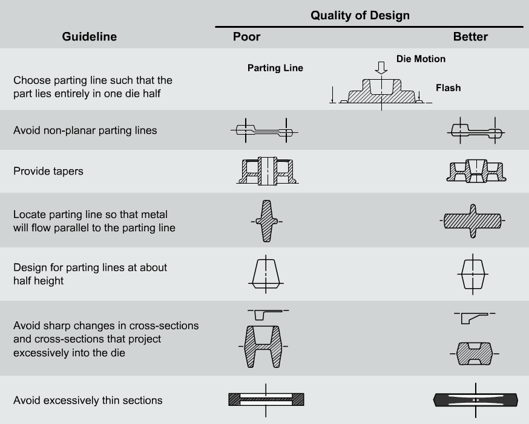
Rolling
Process Description
A strip of sheet metal is fed continuously through a series of contoured rolls in tandem. As the stock
passes through the rolls, it is gradually formed into a shape with the desired cross-section. The
work-piece is a coiled strip of ductile stock, which is then rolled into either simple, cylindrical or
complex shapes varying in thickness from 0.1 mm - 3 mm thick and up to 0.5m wide. Roll sets can also
have side rolls. The size of the rolls depends on the work-piece thickness and its formability. Rolling
is a plane strain operation. By constraining the direction perpendicular to the direction of rolling,
the displacement (deformation) of the length of the work-piece is increased, not its width. Therefore,
as the work-piece elongates during rolling, it speeds up; that is, the work-piece speed is slower than
the rolls while entering and faster than the rolls when leaving. The frictional force acts at a central
point, where work-piece speed and roll speed are the same. Friction is necessary for rolling to occur,
and the roll pressure depends on the coefficient of friction. Figure 4.3 shows various processes of
rolling.
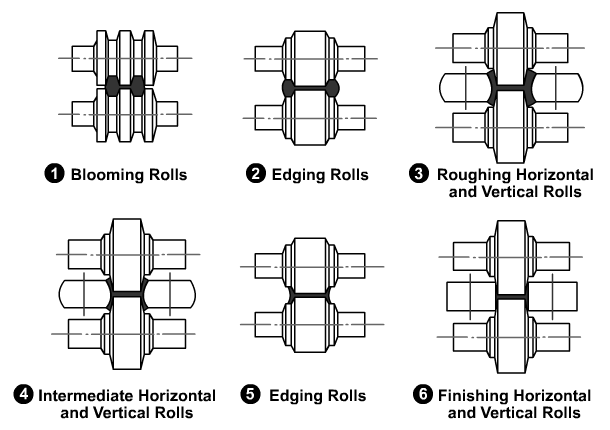
Material Utilization
Scrap may be produced when the continuous product is cut to the proper length. The process has a high
material utilization.
Flexibility
Most of the rolls are not dedicated. However, shaped rolls are dedicated and their setting up time is
high. Therefore, the flexibility of rolling is fair.
Cycle Time
The cycle time is dependent on the length of the product, but the production rate is rapid.
Operating Cost
Production rates are rapid so that labour costs are low. Material utilization is excellent. Tooling and
set-up costs are high, so best economics occur with mass production.
Dimensional Accuracy
The quality of the finished product depends primarily on the rolling temperature. The surface texture
deteriorates with increasing temperature. Typical tolerances are ±0.4 mm for the width of the formed
cross-section and ±1.5 mm for its depth. The surface finish typically varies from ±10∝m to ±0.25∝m to
±3.8∝m depending on the severity of the forming, and it typically varies from ±0.4∝m to ±1.3∝m for cold
finished sheet stock.
Shape
Finished part thickness ranges from 0.6 mm - 3 mm. Parts are typically long with a constant cross-section
that can be complex. Short pieces can be obtained by cutting longer ones. Widths of the stock before
forming normally range to 1 m and stock thickness to 5 mm. The resulting product from rolling is
suitable for both decorative and structural applications.
Product Range
Products typically made by rolling are roof and siding panels for buildings, architectural trim, down
spouts, window frames, stove and refrigerator panels and shelves, curtain rods and metal picture frames.
Materials
Any metal that is ductile at the temperature of forming can be used. Aluminum, copper and their alloys
have excellent formability ratings, nickel and magnesium have fair to good formability ratings and mild
steel and stainless steel have fair to excellent formability ratings.
Advantages of Rolling
The best applications are longer parts with complex cross-sectional shapes. Production is rapid, and
surface finish and dimensional consistency are good.
Disadvantages of Rolling
Parts must have the same cross-section for their entire length. Tooling and set-up costs are high. The
process may cause work hardening and micro-cracks.
Design Rule
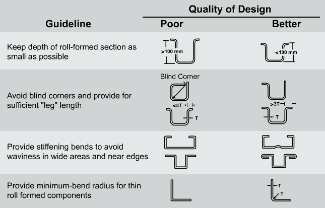
Extrusion
Process Description
Metal billets (slugs) are forced by either a mechanically or hydraulically actuated ram through a die
hole of the desired shape or around a punch. The metal emerges from the die in solidified form and
closely conforms in cross-section to the shape and dimensions of the die opening. The punch controls the
inside shape of the work-piece. The die controls the outside shape of the work-piece and may have more
than one diameter. The work-piece is ejected by either a counterpunch or an ejector. The rams are
actuated between 20 to 60 times (strokes) per minute. Sometimes the punch and die have to be cooled by
compressed air in order to maintain continuous production. This is because there can be significant
temperature rise during cold forming, which can cause incipient melting (melting of the low melting
point phases in the microstructure). There are three types of extrusion processes, namely,
- forward impact extrusion [in which the metal flows out (downward) through die],
- backward impact extrusion [in which the metal flows (upward) around the punch], and
- combined forward/backward impact extrusion
Forward impact extrusion can be used to produce complex shapes and reduces the cross-section of the
work-piece drastically. The forward impact extrusion is shown in Figure 4.4.
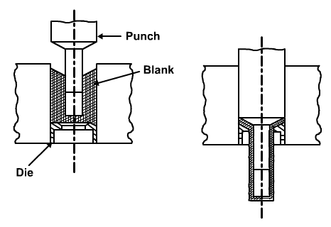
Backward impact extrusion cannot produce very long shapes, but can produce hollow components with large
length to diameter ratios.
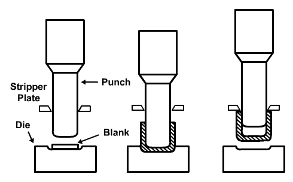
Figure 4.5 depicts the backward impact extrusion. Wall thickness of the product is controlled by the
clearance between the punch and the die. The final work-pieces have excellent surface finish. Round,
cylindrical cross-sectional parts are most common, but rectangular or odd cross-sectional parts are also
possible. The length of extruded part is limited by the column strength of the machine. Length of the
finished part is limited to six times the inside diameter of the part. The advantage of both the forward
and the backward impact extrusion is combined in combined impact extrusion which is shown in Figure 4.6.
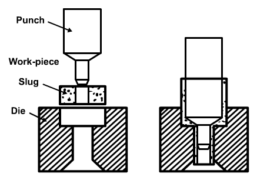
Material Utilization
Extrusion is a near net shape process and the only scrap that is produced is during the cutting of the
continuous product to its length. The material utilization of this process is high.
Flexibility
The tooling is dedicated and setting up times is low and, therefore, the process has only a fair
flexibility.
Cycle Time
The cycle time is dependent on the product's length, but the production rate is very high and, therefore,
the cycle time is low.
Operating Cost
Hot extrusions need protection of the work-piece from air and oxidation. Therefore, hot extrusion is a
more expensive process. Cold extrusion has high tooling and set-up costs and, therefore, this process is
best for mass production.
Dimensional Accuracy
The quality of the product is generally good for all metals, but depends mainly on the forming
temperature. The surface texture deteriorates with increasing temperature. Typical tolerances are ±0.25
mm for diameters and ±0.4 mm for lengths. Surface roughness ranges typically from 0.5∝m - 3.2∝m. The
tolerances and surface roughness depend on press condition, ram pressure, tool geometry, material size
and shape, allowed length-to-diameter ratio and lubrication, and whether or not hot or cold extrusion is
used.
Shape
Constant cross-sections of any length up to 1.5 m are feasible. Cross-sections can be large enough to
occupy a circle of 250 mm in diameter for aluminum and 150 mm in diameter for steel, and they can be
very complex. The above-mentioned products are produced through the hot extrusion method.
The parts can range from 12 mm - 160 mm in diameter, and the maximum length of the part is 2-m. This
process is suitable for circular, hollow parts closed at one end. Cylindrical cross-sectional parts are
most common; however, rectangular or odd cross-sectional parts are also possible. The work-pieces can
have either combined shapes, stepped shapes or cupped shapes. Typical work-piece diameters are 0.01m -
0.50 m and typical work-piece lengths range from 0.01 m - 0.80 m. The above-mentioned shapes can be
produced through the cold extrusion method.
Product
Typical products made by extrusion are building and automotive trim, window frame members, tubing,
aircraft structural parts, railings, flashlight cases, aerosol cans, military projectiles, and fire
extinguishers.
Materials
Most commercially available shapes are extruded in copper, brass, steel, aluminum, zinc, and magnesium. A
large number of copper-based alloys can also be extruded. Those with the highest zinc content are the
most plastic and can produce the most complex shapes. Lightweight alloys, like those of aluminum and
magnesium, are the most frequently used materials for extruded parts. Harder alloys are more difficult
to extrude. Steels and stainless steels can also be extruded through hot extrusion method.
Most cold extrusions use tin. The method has also been used on lead and aluminum parts. Zinc can be
handled with a little preheating to get it to the ductile range of the order of 150°C.
Advantages of Extrusion
Intricate cross-sectional shapes, including undercuts and hollows, can be obtained. The tooling cost is
low. Extrusion increases the hardness and yield strength of the material. High material utilization
reduces costs due to waste and, usually, further machining is not necessary.
Disadvantages of Extrusion
Products of extrusion are limited to ductile materials and restricted to a maximum cross-sectional size.
Parts of non-uniform cross-section require additional operations. Extrusion creates residual surface
stresses and micro-cracks. Close tolerances are difficult to achieve through the extrusion process.
Principles of Machining
Metal cutting
Metal cutting processes are used for machining parts to required dimensions. In these operations, which
are necessary for products requiring close dimensional accuracy, metal is removed from the parts in
small chips. Such operations are performed on machine tools, which include various power-driven machines
meant for the cutting of metal. In general, metal cutting processes include: turning, planing, shaping,
milling, drilling, boring and grinding, which operate on either a reciprocating or a rotary-type
principle. In this principle, either the tool or the work-piece reciprocates or rotates as shown in
Figure 5.1.
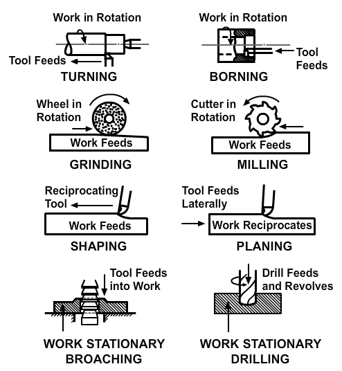
Thus, metal cutting process forms the basis of the engineering industry and involved in the development
of components. A basic fundamental knowledge of machining of materials along with the theory of metal
cutting helps developing a scientific approach in dealing with problems encountered in machining
The process of forming a product by the removal of material is common to all manufactured products, with
only the techniques for removing the material varying. Even then, the same basic techniques are
reflected in different industries.
All machining methods relies for their operation on shearing molecules of the material from the adjacent
molecular force.
The basis of shearing is the application of concentrated force to a small area by means of a tool or
knife while supporting the immediately adjacent material. This can be seen in the tailor's scissors, as
well as in the powered guillotine. The force available may be applied over a long edge, as in the
blanking of shapes from such materials as felt or paper using a shaped knife or rule and a
semi-resilient support for the material, or may be concentrated at one or more points by applying shear
to the blade, as in a guillotine. The application of the force may be linear, vertical (as in the
guillotine), horizontal (as in a bread slicer), or rotational (as in a ham slicer). All, however, are
forms of machining. Some may support the work close to the blade, while others will rely on the rigidity
of the object being cut to provide the second component of the shear.
Machining operations can be categories, based on the motion of tool and workpiece. When both the Job and
tool are having translatory motion, e.g., shapping and planning operation; when job is rotating, and
tool is having translatory motion, e.g., Turning; When job is having translator motion and tool is
rotating ex. Milling, grinding; when job is stationary, and tool is having rotating and translatory
motion e.g., drilling.
Turning
Lathe turning is generally considered to be the oldest mechanized machining process, the origins of
wood-turning being lost in antiquity. The part is rotated while a tool is offered up to it. The lathe is
capable of the following operations.
- Turning straight, conical, curved or grooved work-pieces, such as, shafts, handles, spindles.
- Facing to produce a flat surface on the end of a part.
- Profiling, either internally or externally to produce concave or convex shapes.
- Producing shapes by the use of form tools.
- Boring to provide a shaped bore and internal grooves.
- Drilling to produce a hole concentric with the work-piece.
- Cutting off (or parting) to separate a piece from the stock material.
- Threading (or screwing) to produce internal or external threads.
- Knurling or embossing to produce regular patterns on cylindrical surfaces.
Milling
Milling is the metal removal process in which the work-piece advances against multi-point tool. Cutting
forces, angle of entry, and effective geometry of tools may change during the milling process because
the cutter tooth is constantly changing position in relation to the work-piece. The milling process is
generally divided into peripheral milling and face milling.
In peripheral milling, the finished surface is parallel to the axis of the milling cutter and is
generated by teeth located on the periphery of the cutter. In face milling, the finished surface is at a
right angle with the cutter axis and is generated by the teeth located on the periphery and the flat end
of the cutter.
In peripheral milling, metal removal may be accomplished by rotating the cutter against the direction of
work-piece travel, known as conventional or up milling or by rotating the cutter with the direction of
work-piece travel, known as climb or down milling.
Difference in climb and conventional milling is the difference in formation of chip. The chip formed by
conventional milling will be thin at the beginning and increase to the maximum at the end of the cut
while the chip formed by climb milling will be thick during beginning and thin at the end.
The milling process is characterized by a number of processes which are discussed below.
Interrupted Cutting
Each of the cutting edges in Interrupted Cutting removes material for only a part of the rotation of the
milling cutter. As a result, the cutting edge has time to cool before it again removes material. This
allows much larger material rates.
Small Size of Chip
Though the size of the chip is small, in view of multiple cutting edges in contact, a large amount of
material is removed and as a result the component is generally completed in a single pass.
Variation in Chip Thickness
This contributes to non-steady state cyclic conditions of varying cutting forces during the contact of
the cutting edge with the chip thickness varying from zero to maximum size or vice versa.
Milling machine is one of the most versatile machine tools. It is adaptable for quantity production as
well as in job shops and tool rooms. The versatility of milling is because of the large variety of
accessories and tools available with milling operation.
Milling Cutters
The versatility of the milling machine is contributed to a great extent by the variety of milling cutters
that are available. The classification of milling cutters is given below.
End Mill
This is shank mounted and is generally used in vertical axis milling machines. It is used for milling
slots, keyways and pockets, where other types of milling cutters cannot be used. A depth of cut of
almost half the diameter can be taken with the end mills. The end mills have the cutting edge running
through the length of the cutting portion as well as on the face radially up to certain length. The
helix angle of the cutting edge promotes smooth and efficient cutting even at high cutting speeds and
feed rates. High cutting speeds are generally recommended for this type of milling cutters. The end mill
cutter is shown in Figure 5.27.
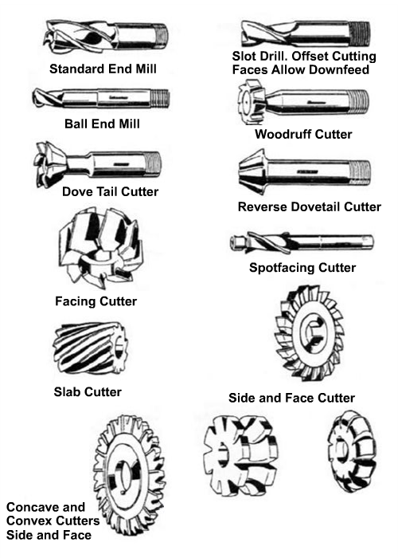
Figure 5.27. Views of Various End Mill Cutters